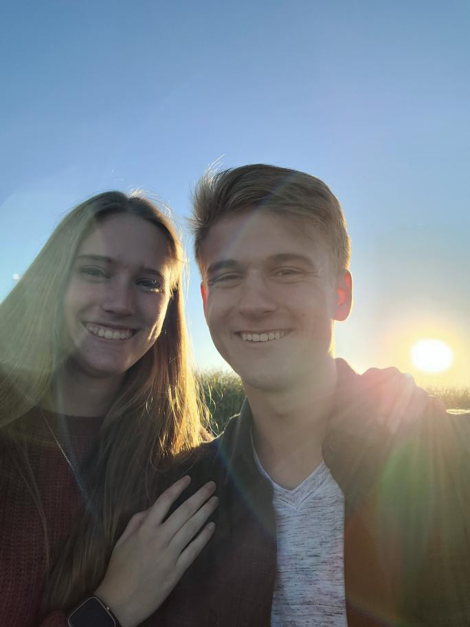

Aiden Roskelley | WDD 130
My name is Aiden Roskelley, I am 19 years old and a computer science major at BYUI. I play the piano, guitar, and one day the cello and have hobbies ranging from D&D to going to the gym. I am from Las Vegas, Nevada even though I was born here in Rexburg. My family moved to Vegas when I was two so I don't remember here much from the, but it is cool to come back to my roots. I work for Jimmy Johns right now, but hope to one day go into software development or AI development which I think would be really awesome. I think I could do a lot of good with ai and I could make some good money. I am running out of words, so here is some Rick Astley. We're no strangers to love. You know the rules and so do I. A full commitments what I'm thinking of. You wouldn't get it from any other guy. I just wanna tell you how I'm feeling. Gotta make you understand. Never gonna give you up, never gonna let you down. Never gonna run around and desert you. Never gonna make you cry, never gonna say goodbye. Never gonna tell a lie and hurt you.